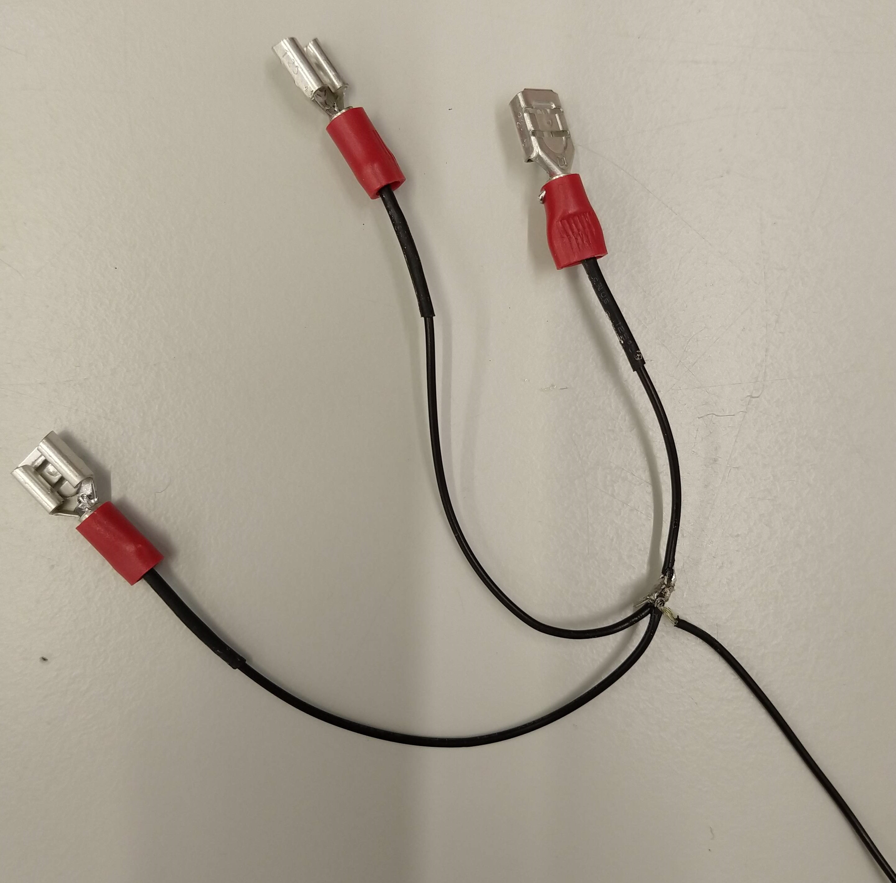
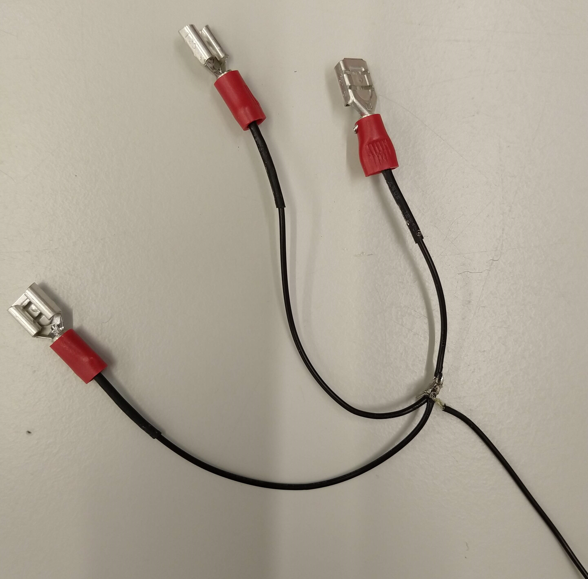

Using This Document
This document is designed to supplement the 3D model of the microscope not as a stand alone instruction manual. A basic level of experience in building and aligning optical systems is assumed so only areas where the build process deviates from what would be considered standard practice are specifically included.
For elements of the build relating to controlling commercially available components such as electrical connections and software please refer to the relevant manual.
Main Body
Alignment of the main body of the microscope is greatly aided by the use of a dedicated alignment laser with interchangeable screw mounts. This allows for mounting of the laser at various ports and on sections of rail.

Infinity Cubes
The two vertically mounted Infinity Cubes need to have their filter cubes mounted the other way up to standard. To achieve this the top and bottom plates need to be removed and swapped before fitting in to the microscope.

The desired set up can be found in the microscope 3D model.
Excitation Module
This module can be aligned with the lasers in the design by usual techniques.
Beam Expansion Module
This module is best aligned using the output from the excitation module and as such should be built following that module. Alignment can be conducted with usual techniques.
Connecting Modules
As the Main Body and Excitation modules are self contained on boards they can be built and then moved into place if convenient. Once the three modules are aligned individually and in place they need to be aligned to eachother. Assuming you have already used the Excitation Module to align the Beam Expansion Module these only need aligning collectively to the Main Body. To do this it can be useful to use the alignment laser mounted in the Main Body and a laser from the Excitation Module to give opposing beams through the system.
Incubation Box/Heater
- After checking that you are in possession of the full set of parts tap every M4 sized hole (the electric screwdriver is a big time saver for this).
- Before connecting the main panels together, first attach each subsidiary panel to its respective main face.
- Following this, now attach the 5 main panels together to confirm the parts fit correctly.
- Remove the top panel and attach the felt air diffusers as shown below.
Air Diffusers
- Remove the "top filter mounts" from the top panel to reveal the slits beneath.
- Measure and cut the diffuser felt to fit the slits.

- Pull the diffuser a short way through one of the slits and re attach the corresponding "top filter mount" to hold it in place.
- To do this, pull the diffuser to one side and attach the row of screws on the opposite side.

- Then, using a screwdriver or similar, poke through the holes on the other side to put holes through the diffuser material and attache the screws on this side.

- Pull the loose side of the diffuser across the D-shaped diffuser mounts and pass it through the slit on the other side.
- Pull the diffuser taught across the mounts to ensure a good fit and secure it with the corresponding "top filter mount".

- Repeat the above steps for the second diffuser then reattach the now completed top panel to the rest of the box.
Adding the Box to the system
This is a two person job- Check the box is securely assembled before lifting.
- Open hatch doors on the two side panels and remove the "top cover" on the top panel to provide handholds.
- Remove the camera and CRISP units from the microscope "main body".
- Lift the box over the top of the "main body" and gently set it down.
Heater Setup
- Remove the "Back Air-hose Covers" from the box.
- Using Epoxy, for each cover attach the flared air-hose connector.
- Allow this to set for about 20 minutes (refer to epoxy for precise time).
- For the top two "Back Air-hose covers", use the Epoxy to attach the non-flared air hose connectors from the opposite side to the flared connector.

- Leave the 4 assemblies to set for 3 hours (refer to epoxy for precise time).
- Before reattaching the assemblies to the back of the box, measure and cut the air-hose to length for each of the 4 connections.
- Once cut, attach the air-hoses to the heater and then to the attachment assemblies (Utilise a screwing action following the direction of the structural wire in the air hose).
Focus Shifter
 
